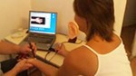
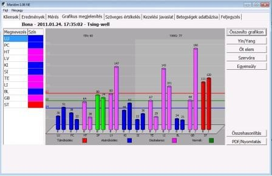
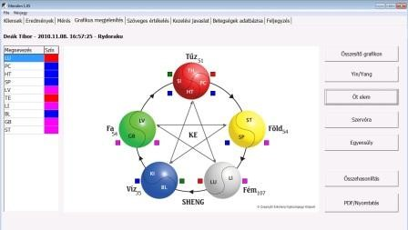
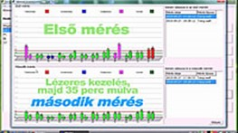
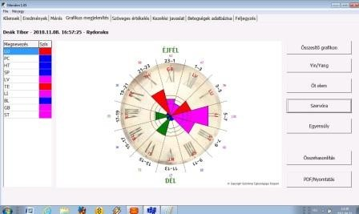
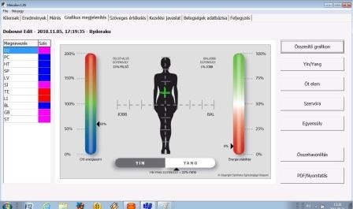
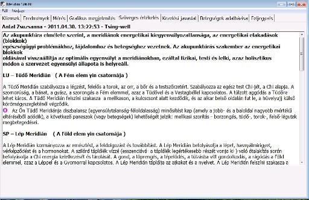

:max_bytes(150000):strip_icc()/balanced-stones-on-a-pebble-beach-875372302-5a91e16bc673350037f6c2ca.jpg)
Állapotfelmérés

A szervezetünk egészségi állapotának áttekintése
Meridiánok (energiacsatornák) számítógépes mérése és értékelése a prevenció és az állapotfelmérés szolgálatában
Hogyan függ össze a meridiánok egyensúlya és az egészségünk?
A kínaiak már több mint 4000 éve felfedezték, hogy minden betegség forrása az emberi szervezet megzavart energiaháztartására vezethető vissza, amelynek állapota a meridiánokon, a szervezet energiapályáin mérhető le. A meridiánokban áramló Csi keringését az egymással szemben álló, de egymást kiegészítő poláris erők a yin és a yang irányítják. Testünk-lelkünk egyensúlyát egészségét a yin-yang elv szerint a két ellentétes erő megfelelő egyensúlya biztosítja. Az egyensúly felbomlása betegséghez vezet. Amennyiben a yang kerül túlsúlyba, a kialakuló betegségekre az energiateltség, a bőség és a hiperfunkció jellemző. Ezzel szemben a yin túlsúlya okozta kórállapotokra az energiahiány, a hipofunkció jellemző.
Hogyan történik az állapotfelmérés?
Egy letapogató szonda segítségével megmérjük a 12 fő meridián energiaszintjét a kéz és láb előre meghatározott pontjain, ahogyan a számítógép - fényképes illusztrációval segítve- pontról pontra kalauzolja a szakembert. A mért értékeket a számítógép automatikusan rögzíti és tárolja. A mérés időtartama kb. 10 perc.
Tsing-well mérés
Ryodoraku mérés
A meridiánok meghatározott pontjain mért értékeket az alábbi szempontok alapján értékeljük:
1, Alapmérés:

Az oszlopok értékei ábrázolják a kliens energiaszintjét, először a kar yin-, aztán a kar yang, aztán a láb ying és yang meridiánjait értékelve. A diagram színei a mért értékek függvényében változnak, a zöld szín normál működést, a piros szín túlműködést, kék szín alulműködést, a mályva szín a diszbalanszt jelöli.
2, A YIN/YANG ábrázolástípus
Először a test bal részén elhelyezkedő Yang meridiánokat hasonlítja össze a jobb résszel. Ugyancsak meghatározásra kerül a Ying Yang mérések értékeinek átlaga és az ettől való eltérések, a yin/yang egyensúly.
3, Öt elem
A mért eredmények a hagyományos kínai orvoslásból jól ismert elemekhez kapcsoltan jelennek meg. Az egyes szerveink ill. a hozzájuk tartozó meridiánok is az Öt Elem valamelyikéhez kötődnek. A Tűz: a szív, a vékonybél, pericardium, hármas melegítő ; A Föld: a gyomor és a lép ill. hasnyálmirigy; A Fém: a tüdő és a vastagbél; A Víz: a vese és a hólyag; A Fa: a máj és az epehólyag Ha mindegyik elem optimálisan működik, akkor tökéletes az egészség. Ha azonban valamelyik elem harmóniája megbomlik, ez máris további kihatással lehet a vele kapcsolatban álló elem vagy elemek állapotára. A mért eredményekből megtudhatjuk az 5 elem értékeit: (+) amennyiben túlműködés tapasztalható, (-) amennyiben túl alacsony az energiaszint (X) értéket kapunk, ha a jobb- és a baloldal mért értékei túlzottan eltérnek egymástól.
3, A mért értékek összehasonlítását szolgáló ábrázolás.
4, Szervóra
Ebben az esetben a meridiánok energiaszintjét egy szervórán láthatjuk feltüntetve.
A Yin-yang elmélet szerint a Qi a meridián-láncolatban szigorúan meghatározott sorrendben kering, ezt nevezzük szervórának. A 12 /fő/ meridián energiaáramlás sorrendjében a következők:
Tüdő, Vastagbél, Gyomor, Lép, Szív, Vékonybél, Húgyhólyag, Vese, Vérerek ura, Hármas melegítő, Epehólyag, Máj.
(Pl. A Tüdő aktív ideje hajnali 3 és 5 óra között van, ilyenkor készíti föl a tüdő a szervezetet a napi aktivitásra. Asztmás betegek ilyenkor rendszerint erős köhögéssel ébrednek.)
5, Egyensúly ábra
A kliens energetikai egyensúlyának teljes elemzése történik. Egyrészt a Chi energiaszint, amely a kliens teljes energia-szintjének mutatója. Ezt követi a Yin-Yang egyensúly, aztán az energia stabilitásának mutatója. Továbbá összehasonlításra kerül a jobb-bal, felső-alsó energiaszintek értékei.
Szöveges Értékelés:
Szöveges elemzés írott formában segíti úgy a gyógyító szakembert, mint a klienst a gyógyító folyamat áttekintésében, megértésében. A szöveges értékelés és a grafikonok, ábrák kinyomtatott formában a kliens rendelkezésére bocsáthatóak. Esettanulmányok: Bár a MeriDiM állapotfelmérő műszer nem kezel, de a meridián-diganosztikai tulajdonsága és kezelési javaslatai alapján kiváló segítséget nyújt a szakembereknek az eredményes terápiához.
http://www.meridim.com/index.php?option=com_content&view=article&id=59&Itemid=85&lang=hu